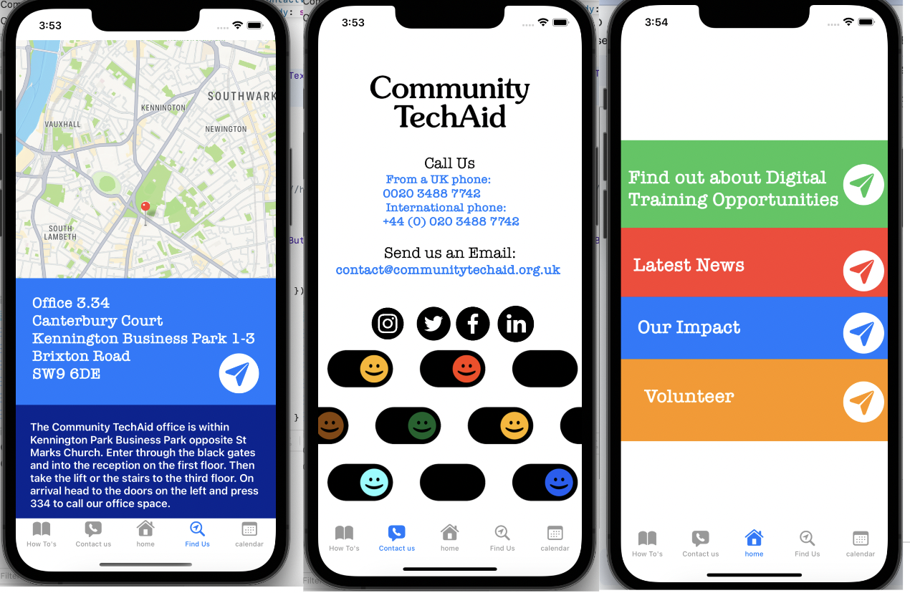

Community Tech Aid is a charity I have volunteered at that provides laptops and promotes tech literacy to the community. The objective of this app was to provide accessible information for beneficiaries who are in receipt of a computer from the charity and to help them get started and access help and useful links that can aid them in their journey and their first steps towards computer literacy. The point of making an app like this is because these users tend to have mobile devices and are more fluent in these so this app can make it easier for them to transfer these skills to their newly acquired laptops.
To see a written blog on the iterative design process go to: https://computationalpracticelaura.myblog.arts.ac.uk/